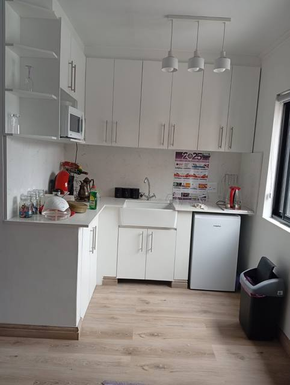

Renovation & woodworks in Cape Town City Centre
The CBD is apartment blocks, converted office buildings, shops and offices. Access, parking and building rules matter, so we plan deliveries and installs around them. We're often asked for apartment kitchens and built-ins, office and shop fit-outs, and short-let apartment refits.
Examples of our work
From our projects across Cape Town.





Working in Cape Town City Centre
The city centre is mostly apartment blocks, converted office buildings, shops and offices, from old buildings on Long and Bree Streets to new towers on the Foreshore. Nearly everything is sectional title, so work needs the managing agent's or body corporate's approval, booked lifts and loading bays, and set working hours. Apartments are often small, so built-in storage, compact kitchens and fold-away desks make a real difference. We build in our workshop and bring pieces in ready to fit, which keeps time in the building short.
Kitchens · Built-in cupboards · Doors & garage doors · Furniture · Decks · Renovations →
Questions from Cape Town City Centre
Can you work in apartment buildings in the City Centre?
Yes. We arrange access and delivery times with the building manager, protect lifts and corridors, and build units in our workshop so time on site is short.
Do I need body corporate approval for a new kitchen in my CBD flat?
Usually yes, especially if plumbing or electrical work changes. We can give you the drawings and timeline they ask for, and work within the building's hours.
How do you get large cupboards into an apartment building?
We build them in sections sized for the lift and doors, then assemble and fix them in the apartment.
Will units fit in the lift?
We check lift and corridor sizes before production and build units in sections where necessary.